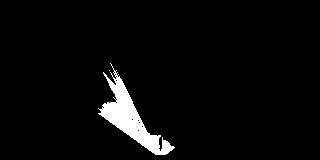

The goals / steps of this project are the following:
Training / Calibration
process_image() function with the appropriate image processing steps (perspective transform, color threshold etc.) to get from raw images to a map. The output_image you create in this step should demonstrate that your mapping pipeline works.moviepy to process the images in your saved dataset with the process_image() function. Include the video you produce as part of your submission.Autonomous Navigation / Mapping
perception_step() function within the perception.py script with the appropriate image processing functions to create a map and update Rover() data (similar to what you did with process_image() in the notebook).decision_step() function within the decision.py script with conditional statements that take into consideration the outputs of the perception_step() in deciding how to issue throttle, brake and steering commands.This file will cover the rubric criteria and how item was addressed.
Initially the functions were researched in a class notes Jupyter notebook on my local machine (while working through the lessons). Halfway through the project time-frame, the Rover_Project_Test_Notebook code was migrated to this forked project in github. At the time of the file migration, the notebook was adding terrain, obstacles and rock sample colors. The colors were stuck at the starting coordinates of the video. The following notes cover the work now recorded in the forked project commits.
At the start, the function color_thresh() only masked pixels above a specified threshold. This worked for collecting navigable terrain, but not for obstacle or rock sample detection. The following changes were made to the default cell in the Rover_Project_Test_Notebook file:
The color_thresh function was updated to support an RGB range instead of checking above a given threshold. The function was verified with the original warped test image and then the thresholds were tested with normal images.
The default range for the lower colors was missing sections of the images, so the threshold check was updated to include the specified values in the mask. This significantly improved the obstacle and sample rock detection, and slightly improved the terrain. The function was modified instead of the threshold values in order to avoid changing parameters throughout the project.

The world mapping appears to be missing the sample rocks, so another test was made with a warped image.


The color threshold for the sample rock was determined by using the "dropper" feature in inkscape to collect an approximate RGB range. The lesson stated that the obstacles were the opposite threshold of the terrain values.
process_image() function with the appropriate analysis steps to map pixels identifying navigable terrain, obstacles and rock samples into a world map. Run process_image() on your test data using the moviepy functions provided to create video output of your result.Using the default sample code from the test notebook and lesson examples produced a video where the terrain would be updated in the starting point of the rover. After running the code with a new set of sample data, it appeared that the default code worked as intended and the rover just traveled a short distance. It was confirmed that the longer the rover stays in an area, the more saturated the blue "terrain" pixels would be.
After the initial terrain test was verified, the variable names were updated to report the data is related to terrain tracking and additional code was added to track the obstacles in TODO 2. This looked like unnecessary copying and pasting, so a for loop was added in and the thresholds were tracked as part of an array of RGB tuples. The threshold values were pulled from the experiments in the color_thresh cell.
rgb_thresh_lower=(160, 160, 160), rgb_thresh_upper=(255, 255, 255) #terrain defaults in function parameters
obstacle_threshed = color_thresh(image, (0, 0, 0), (160, 160, 160))
rock_threshed = color_thresh(image, (125, 100, 0), (200, 200, 75))
The for loop started with range(2,3) to verify the code continued to work as intended. The loop was altered to run with the list [0, 2]. This was to test the obstacles next after proving the terrain still worked as intended. With the latest code changes, both obstacles and terrain were successfully tracked. Some reservations about the quality, since the blue areas overlapped the obstacles.
The loop was then extended to iterate through the full list of items to map (terrain, obstacles and rock samples) and it did not show a rock sample on the map. New data was collected to test out the full list and showed that the colors overlapped to the extent that it impeded observing the rock sample color.
perception_step() (at the bottom of the perception.py script) and decision_step() (in decision.py) functions in the autonomous mapping scripts and an explanation is provided in the writeup of how and why these functions were modified as they were.Sections 1 - 3 were copied from the Rover_Project_Test_Notebook page. Step 4 assigned the generated image mask to the rover data within the for loop. Steps 5 through 7 were also copied from the notebook analysis section. The function color_thresh() was also updated to match the analysis doc as well. Step 8 was copied from the Coordinate Transformations example in the analysis notebook and added to the for loop. A new python notebook Rover_Test was created to test the autonomous functions before running in the simulator. The error in muddled video output in the analysis step became clearer with these additional tests. The terrain and obstacle masks were not overlapping in certain parts of the image, which caused the black portions of the overlay as the rover is moving. These current flawed parameters will be used until autonomous mode is finished. After that the values in this document and Perception.py will be revisited to improve the rover navigation.
Rover Simulator Settings for Roversim_x86_64: Screen Resolution: 1280 x 1024 Graphics Quality: Fantastic Select Monitor: Display 2 (Right)
The rover wasn't steering during the first autonomous mode test. It was discovered that the rover data was not updated with the rover centric terrain polar coordinates and the first run after the code change resulted in 53.1% mapped with a fidelity of 57.0% and 4 samples located. On additional test runs with this revision, it was noticed that the rover is not avoiding obstacles in the middle of the terrain.

To improve the fidelity, thresholds were added to perception_step where the image is processed if pitch and roll are within 1 degree of 0. The resulting test run showed the rover will not get relevant data if it's turns are too fast and ended up going in circles.
The threshold was then changed to calculate if the pitch and roll are within 3 degrees, which resulted in a higher mapped area (albeit nauseating to watch from the abrupt steering).

Fidelity improvement was returned to 1 degree and the focus became the default parameters in drive_rover.py. Since the image processing would halt if the roll and pitch was greater than +- 1 degree, then the movement and rotation speed needed to be decreased. A significant improvement after capping the velocity at 1 meter per second. It takes twice as long to map the environment, but the fidelity appears to be staying above 60% (requirement is a fidelity of at least 60%). The longer the rover was running, the closer to 60% it became.

At this point it was noticed that the analysis image was not displayed in autonomous mode. Another section was added to the Rover_Test document to duplicate the behavior and speed up debugging. It turns out that numpy will silently fail an unsafe type conversion of a float64 to a uint8. Scaled the float before calling astype and the analysis step is visible.
After tampering with more thresholds in drive_rover.py, the robot can attain the minimum requirements. An "are we stuck" check was added when the rover kept hitting a spot where 15 degrees was not enough to dislodge from an object or a wall. Samples can be picked up if the rover runs into them with the current code.